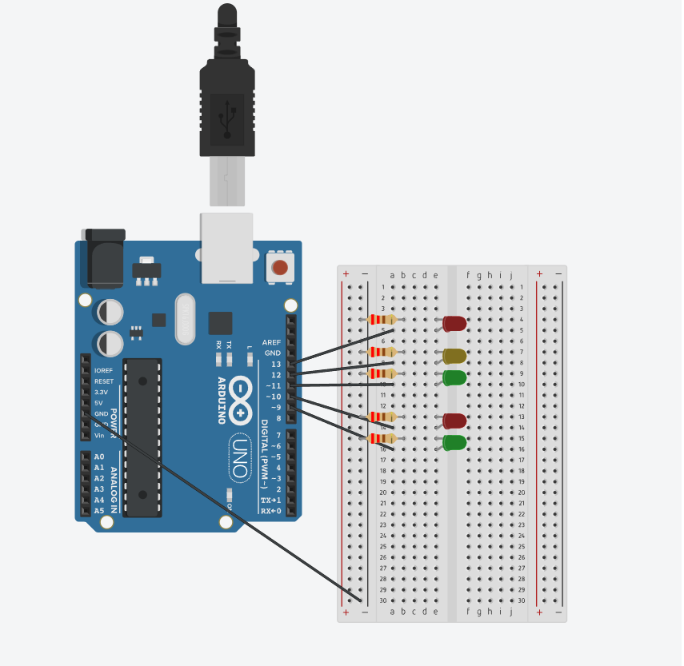

Valgusanduril on kaks töörežiimi. Päevarežiim ja öörežiim.
Ühendage dioodid, takisti ja juhtmed plaadile. Ühendage dioodid, pirn, valgusdioodid, valgusallikas ja liiteseade.
Päevarežiim (korda 4 korda) normaalne režiim:
Esmalt hakkab see tööle punase tulega autodele ja rohelise tulega jalakäijatele (5 sekundit), seejärel vilgub jalakäijatele (6 vilkumist 0,5 sekundit). Seejärel hakkab tööle autode kollane tuli (3 sekundit) ja jalakäijatele punane. Seejärel põleb autodel roheline tuli (5 s) ja punane jalakäijatele, misjärel vilgub autode roheline tuli (6 vilkumist iga 0,5 sek). Viimane etapp on autodele kollane (3 sekundit) ja jalakäijatele punane.
Öörežiim (korda 4 korda):
Töötab ainult kollane tuli (põleb 1 sekund) ja kõik tuled kustuvad 1 sekundiks.
Põhiline tsükkel:
Põhitsüklis kordub päevane režiim 2 korda ja öine režiim 1 kord. Kogu põhitsükkel kordub alati.
LED (punane) – 2
LED(kollane) – 1
LED(roheline) – 2
Taikisti – 5 (220 Om)
Juhe – 6
Arendusplaat – 1

int red_car = 13;
int yellow_car = 12;
int green_car = 11;
int red_people = 10;
int green_people = 9;
bool dayMode = true;
void setup() {
pinMode(red_car, OUTPUT);
pinMode(yellow_car, OUTPUT);
pinMode(green_car, OUTPUT);
pinMode(red_people, OUTPUT);
pinMode(green_people, OUTPUT);
}
void loop() {
if (dayMode) {
digitalWrite(red_car, HIGH);
digitalWrite(red_people, LOW);
digitalWrite(green_people, HIGH);
delay(5000);
digitalWrite(green_people, LOW);
digitalWrite(red_people, HIGH);
for (int i = 0; i < 3; i++) {
digitalWrite(yellow_car, HIGH);
delay(300);
digitalWrite(yellow_car, LOW);
delay(300);
}
digitalWrite(red_car, LOW);
digitalWrite(green_car, HIGH);
delay(5000);
for (int i = 0; i < 3; i++) {
digitalWrite(green_car, LOW);
delay(300);
digitalWrite(green_car, HIGH);
delay(300);
}
digitalWrite(green_car, LOW);
dayMode = false;
}
else {
digitalWrite(red_people, LOW);
digitalWrite(green_people, LOW);
digitalWrite(red_car, LOW);
digitalWrite(green_car, LOW);
for (int i = 0; i < 10; i++) {
digitalWrite(yellow_car, HIGH);
delay(500);
digitalWrite(yellow_car, LOW);
delay(500);
}
dayMode = true;
}
}